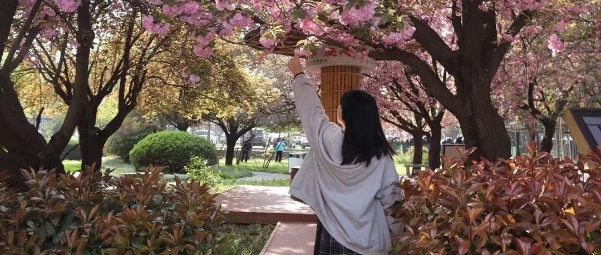

牛！看完这份西安攻略，口水都流出来了....
点击关注秋秋很开心
每周一篇好用APP、学习、成长干货

图：@秋秋
文：@秋秋
大家好，我是秋秋。之前说的西安旅行攻略来啦！！！
赶在五一之前发布，希望有出行计划的你们也能用的到。
我这次真的玩的特别嗨！想去的、想吃的一样没落下！但基础花销才2000多～(实际就.......)

总之没啥遗憾的玩法，直接可以收藏这篇攻略啦～
1、交通
我们从北京出发去西安，4.3上午飞机去，4.6下午回来，满打满算待了4天，大家出行的话，可以留3-5天玩。
去西安的交通，以北京为例，我建议是飞机。
因为机票北京-西安，人均500多块钱，对比高铁单程515，真的差不多。

订机票可以提前一点定，最好早一天出发或晚一天回来，错过高峰期，机票便宜，玩的时候人也会少些。
不过时间不紧张的话，也可以选择高铁。
因为火车和高铁距离市区更近，而机场到市区差不多1个半小时，还是挺颠簸的。
Tips：
1、提前定机票，最好早一天去或者晚一天回，错过高峰期机票也便宜。
2、不太赶时间的可以坐火车和高铁，距离市区更近。
3、坐飞机的话，最好选择可以接机的酒店，更方便。
2、住宿
我们住的这个酒店，真的要给五星级好评。
最开始定酒店的时候，我想距鼓楼钟楼近一点就行，晚上可以出去玩。

这里建议，学生党可以住青旅之类的，西安旅游业很发达，个人感觉相对是安全的。
如果情侣或者家人出行，可以定距钟楼、鼓楼、大雁塔近一点的酒店，晚上西安很热闹，特别适合一起溜达。

（鼓楼附近的喷泉表演）
我们定酒店也纠结了好久，最后我一个朋友说你可以去闲鱼看看！真的打开了新世界！
一样的酒店，闲鱼定280，去哪儿500多，便宜了快一半！感觉自己捡了个大便宜：

（现在看去哪儿上都1000多了）
酒店的早餐🥛

酒店的下午茶☕️

还有按摩椅、书房、接机，服务还是非常不错的。
大家定酒店的时候也要多看看，各个平台比价，会有意外发现。
Tips：
1、学生党可以选择青旅之类的，更便宜。
2、住宿靠近钟楼、鼓楼、大雁塔，晚上很热闹适合溜达。
3、可以闲鱼看看酒店，会有意想不到的价格
3、玩
说完了最基本的交通、住宿，大头就是玩了。
这里我直接把去过好玩的地方整理给大家：
▌1、鼓楼、钟楼

是西安的地标性建筑，也是西安的最核心区域。听说可以骑自行车上鼓楼，伴随着日落，应该很美的～
钟楼鼓楼可以提前订票，公众号是遇见城墙。

我们没有上去，下面拍拍照感觉也很不错。
▌2、回民街、 洒金桥、大皮院
建议第一个晚上吃饭去。
钟楼、鼓楼、回民街、 洒金桥，这几个地方距离都不远，溜达着去刚刚好。
吃的话，我建议是去洒金桥。
地道小吃更多，本地人也很多在那里买东西的。

推荐美食蛋菜肉夹馍，第一次尝试真的就会爱上！
鸭蛋黄色泽金黄，咬上一口满嘴留香。

牛肉饼，安利最里面的那一家，外酥里嫩，真的回到童年的感觉。

酸汤水饺，千万不要点太多！两个人一份刚刚好。

柿子饼，当小吃不错～
另外除了洒金桥、回民街，我做攻略的吃的地方还有永兴坊、大皮院 ，大家时间不紧张的话，都可以看看。
这里再安利大家一个非常好用的功能，百度地图——行程规划。

打开我的行程，直接添加你想去的地方，就能给你标记好距离，景区路线一目了然，这样更方便。
▌3、陕西历史博物馆

门票是免费的，但是一定要提前预约！！！方法：公众号搜陕西历史博物馆，预约即可。
里面有很多西安文物，毕竟十三朝古都，文化底蕴很丰厚。

自己看不太懂的，可以请个导游，是200块钱/小时，可以拼团，10人团一人20。
请导游也很方便，就是博物馆里面的工作人员，去服务中心就可以。
另外，陕西历史博物馆里，1-3号馆是免费的，珍宝馆和壁画馆是收费的，一个人270。

个人觉得时间不紧张的可以去看看，不去，前面免费的馆+20块钱的导游，文物也已经够看的了。
▌4、赛格广场、长安大排档

这个景点挨着陕西历史博物馆，步行差不多1.4公里，10分钟就能到。
赛格广场在西安也很有名气的，据说是亚洲第一长的电梯就在这，很适合拍照。

（图片来自小红书）
长安大排档是吃饭的地方，本地美食一箩筐，也是网红店，在抖音上也特别火。
里面吃的很精致，推荐这个荔枝，其实是虾球，用料很足。

还有网红毛笔，葫芦鸡，当地特色：


人均100块钱左右，物价也还可以，口感我觉得还很不错，另外里面的面有点咸，分量的话都很大，不要点太多。
▌5、大雁塔、大唐不夜城、大唐芙蓉园

这三个算挨在一起。
大唐不夜城、大唐芙蓉园一定要去！让你感受大唐的辉煌。
我因为自己平时也不敢穿汉服，就趁着去西安（那里穿汉服小姐姐挺多的）还尝试了一下。

妆造150，汉服229，跟拍一个半小时500，难得出去玩一次，就想保留一点不一样的回忆。
大雁塔据说是玄奘传经的地方，我们兴趣不大，就没走近看。

（图片来源小红书）
大唐芙蓉园，去的时候还是要买门票，直接大众点评美团定就可以，一个人是50。园子也挺大，差不多逛2-3小时。
大唐不夜城还有喷泉表演，皮卡晨小姐姐以及各种表演时间，大家记得微博看看时间表。
我们因为拍照用了很多时间，大唐不夜城就没看表演。
不过晚上灯火透明的西安，真的就像回到了繁华的大唐！这个时候觉得旅游真好，特别放松。

▌6、秦始皇兵马俑

我们是报的旅行团，直接上酒店接送，飞猪找个评价高的就行。
因为兵马俑不在市区，过去还是差不多有1个半小时路程（堵车挺严重），要合理规划时间。

另外，兵马俑强烈建议请一个讲解，否则真的看就是一摸一样的人俑。
去之前我们旅行团还给报了一个节目《复活的军团》，如果你看了这个，就觉得兵马俑真的很伟大。
那些士兵就是一个个活生生的人，他们的故事，真实的存在过。

而再想想秦始皇统一六国，颁布法律，统一度量衡，真的还是很有谋略的～（当然也是暴君）
▌7、华清池

这个和兵马俑是一条线上的，可以同一天去。
华清池不仅是杨贵妃沐浴的池子，这来还发生了著名的“西安事变”。

这个我们又看了一场表演，不过是沉浸式表演，演员就在你身边，真的很能体会那种家国情怀！
华清池本身确实不太有什么看头，不过挨着骊山风景秀丽。

晚上《长恨歌》表演强烈安利大家去看，舞台真的美轮美奂！

回来之后我还把电影《妖猫传》看了一遍， 就很，为杨贵妃的死唏嘘。
▌ 8、青龙寺

我们当时没有去，但是我查攻略的时候还是很推荐的！
如果时间还多的话可以去看看，据说里面的樱花很不错，而且门票也是免费的～
▌9、华山

也是西安的经典旅行旅线，还有壶口瀑布也有很多人应该想去。
我们俩都体力跟不上，所以就没去，去的话大家可以报一个团，但是一定放在最后！
因为第一天就去爬山，后面几天肯定走不动路。

最后，再来看一下我们的开销细节：
2人4天3晚西安旅行✈️
交通：北京-西安机票来回：985+1100，2085
酒店：3晚loft大床房，280*3，840
旅行团票：240（不算演出，其他几乎都免费）
吃：人均200天，200*2*4=1600
总计：4765，人均2382

进阶开销：
我的汉服跟拍、造型：150+259+500，共计909（可不拍）
陕西历史博物馆壁画珍宝馆+讲解+文创：280*2+200+30，共计790（基础馆也够看！）
华清池表演《西安事变》、《长恨歌》、兵马俑表演《复活的军团》：1004*2=2008（表演不用都看！）
华清池洗脚、兵马俑文创、礼物：500（洗脚啥的可以不用）
总计：4126
实际开销：8891，人均实际：4445.5
希望大家五一也玩的开心哈！终于有5天小长假啦，我要追剧、看书、吃好吃的！
最重要的五一我要回家啦～
☕️ 更 多 内 容：


原创文章，转载请告知本人并标注来源
粉丝vx：qiuqiu5261（朋友圈更新日常）
商务合作：17865514429 （微信）
请注明来意 :)
@小红书：秋秋很开心
喜欢记得星标，让我们一起成长